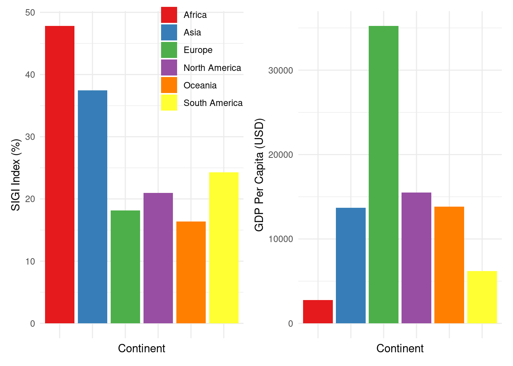

Empowerment Unveiled: A Global Exploration of Gender Inequality with the Social Institutions and Gender Index
Introduction
This report will explore, in detail, the Social Institutions and Gender Index (SIGI). This indicator developed by the OECD is a comprehensive measure designed to capture and quantify gender inequalities embedded in social institutions. The index evaluates various aspects such as discrimination in family code, physical integrity, and civil liberties, offering a multifaceted view of gender bias.
This report provides a comparative analysis of the SIGI across different regions, highlighting how geographical and cultural distinctions impact gender equality. Furthermore, I explore the relationship between the SIGI and key economic factors such as GDP per capita, GNI, Inflation, and Life Expectancy. This analysis aims to uncover how economic development correlates with gender equality, offering a nuanced understanding of the interplay between economic conditions and social institutions’ role in shaping gender dynamics.
Global Map of SIGI Values
This global map effectively displays the dispersion of SIGI values around the world. It clearly outlines the areas with higher SIGI values and those with lower SIGI values. At first glance, it seems that countries in more developed parts of the world, such as North America, South America, Europe, and Oceania have low SIGI values and that countries and territories in Africa and Asia have got higher SIGI values.
Countries with a lower SIGI Value are displayed in a darker colour. These countries exhibit more progressive social institutions that tend to support gender equality, offering women and girls better access to rights, resources and liberties.
Countries with moderate levels of gender inequality may have made significant strides towards equality but certain social institutions and practices still perpetuate gender disparities.
Countries with the highest SIGI Values are displayed in brighter colours, these countries have got the highest level of gender inequality. In these regions, deeply ingrained social institutions significantly hinder women’s and girls’ rights and opportunities.
Regional Comparison

Countries with lower GDP per capita tend to have higher SIGI scores, indicating greater discrimination against women in social institutions. As countries become economically developed, they often invest more in social services, education, and health, contributing to a more equitable society.
This relationship varies significantly across different continents and regions. Countries in the same region with similar economic levels may show different SIGI values due to cultural, legal, and historical differences affecting gender equality.
SIGI Impact Assessment
SIGI VS GDP Per Cap (Left) & SIGI VS GNI in Billions (Right)
The above impact assessments displays the relationship between a country’s SIGI value (Y Axis) and their GDP (Left X Axis) and GNI (Right X Axis).
The above scatter plots illustrate an interesting correlation between a country’s GDP and GNI and its SIGI value. Countries with higher GDP and GNIs tend to exhibit lower SIGI values, which suggests that greater economic prosperity may be associated with more favourable social institutions and gender equality. This could indicate that wealthier nations have more resources to invest in policies and programmes that promote gender equality. This pattern underscores the potential benefits of economic prosperity in enhancing social and gender reforms.
SIGI VS Life Expectancy (Left) & SIGI VS Inflation (Right)
The above impact assessments displays the relationship between a country’s SIGI value (Y Axis) and their average life expectancy (Left X Axis) and inflation (Right X Axis).
As opposed to GDP and GNI, there is no correlation to be seen between a country’s life expectancy or inflation rates and their SIGI value. While it may be expected that improvements in gender equality and social institutions would lead to better health outcomes, such as increased life expectancy, the absence of correlation in these scatter plots shows that other variables play a bigger role in influencing life expectancy. Similarly, the lack of correlation between SIGI and inflation indicates that economic stability and price levels are influenced by factors that are not directly linked to the SIGI value of a country. This highlights the multidimensional nature of economic and social issues, where certain outcomes may depend on a broader set of variables beyond gender equality and social institutional reform.
From Past to Future: An Economic Outlook
The time series analysis clearly illustrates that since 1980, the average GDP of European countries has shown a consistent upward trajectory, contrasting sharply with the relatively stagnant GDP levels observed in African countries. Although we only have the SIGI value data for 2019, it further emphasises this disparity, European countries exhibit significantly lower SIGI values compared to African countries. This indicates a pronounced difference in gender equality and social institutions between the two regions, suggesting that Europe’s economic growth may be bolstered by more equitable social policies, whereas Africa faces ongoing challenges that may be linked to higher levels of gender-based discrimination. In the future, if Africa’s GDP is to rise and follow a similar trajectory as Europe’s has, we could hopefully see the SIGI values of African countries decrease as a result.
Conclusion
This report presents a comprehensive analysis of the Social Institutions and Gender Index, across different global regions, emphasizing the interplay between gender inequality and key economic indicators. While economic development as indicated by GDP per capita and GNI is a positive force towards reducing gender inequality in social institutions, it is clear that achieving gender equality requires a multifaceted approach. Policies and programs aimed at promoting gender equality must tackle specific discriminatory practices and norms directly, beyond the efforts to improve economic conditions.